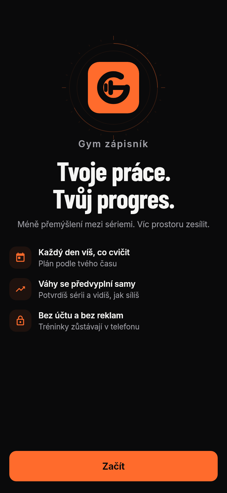
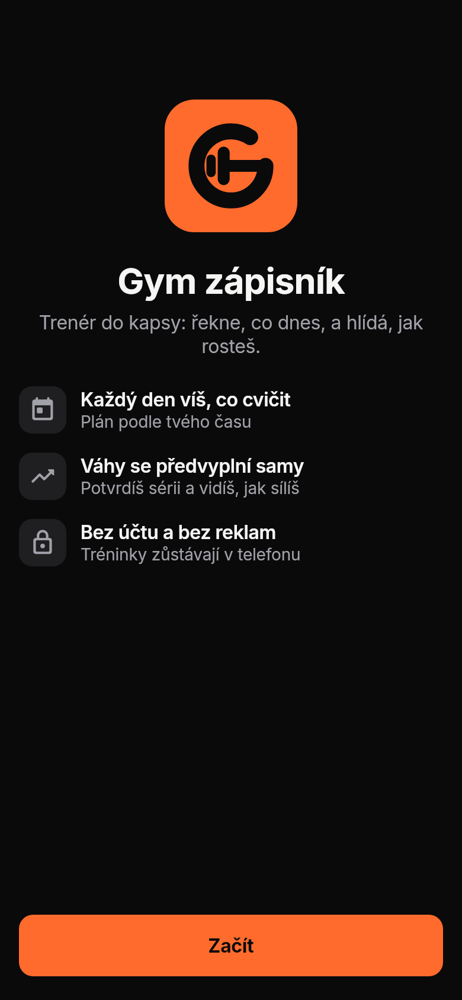
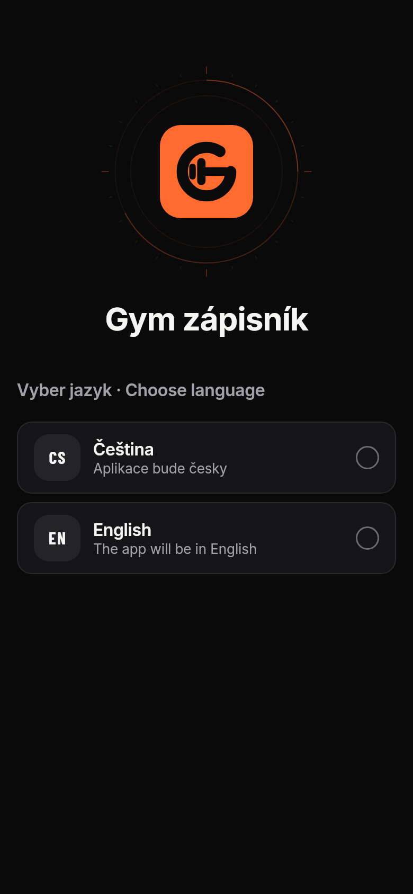
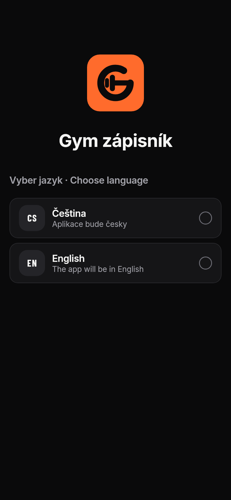
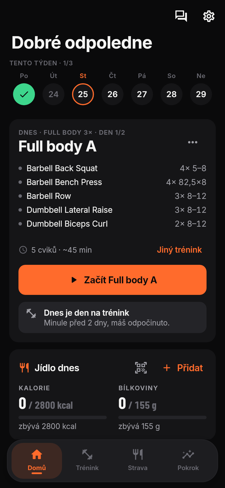

<!doctype html><html lang="en"><meta charset="utf-8"><meta name="viewport" content="width=device-width,initial-scale=1"><title>First impression review</title><style>
body{margin:0;font:14px var(--font-sans,system-ui);color:var(--foreground)}
nav{display:flex;justify-content:center;flex-wrap:wrap;gap:6px;margin:0 0 10px}
button{font:inherit;color:var(--foreground);background:var(--secondary);border:1px solid var(--border);border-radius:var(--radius,8px);padding:8px 12px;cursor:pointer}
button[aria-pressed=true]{outline:2px solid var(--primary);outline-offset:-2px}
button:focus-visible{outline:2px solid var(--ring);outline-offset:2px}
figure{margin:0 auto;max-width:360px}img{display:block;width:100%;height:auto;border-radius:18px}img[hidden]{display:none}
figcaption{text-align:center;color:var(--muted-foreground);font-size:12px;margin-top:10px}
</style><nav aria-label="Screen"><button data-screen="welcome" aria-pressed="true">Welcome</button><button data-screen="language" aria-pressed="false">Language</button><button data-screen="home" aria-pressed="false">Home</button></nav><nav aria-label="Design version"><button data-phase="after" aria-pressed="true">After</button><button data-phase="before" aria-pressed="false">Before</button></nav><figure>




<figcaption>Actual Flutter renders · 390 × 844 phone layout</figcaption></figure><script>
let screen='welcome',phase='after';
document.querySelectorAll('button').forEach(button=>button.addEventListener('click',()=>{
if(button.dataset.screen)screen=button.dataset.screen;
if(button.dataset.phase)phase=button.dataset.phase;
document.querySelectorAll('img').forEach(img=>img.hidden=img.dataset.screen!==screen||img.dataset.phase!==phase);
document.querySelectorAll('button').forEach(b=>b.setAttribute('aria-pressed',b.dataset.screen?b.dataset.screen===screen:b.dataset.phase===phase));
}));</script></html>